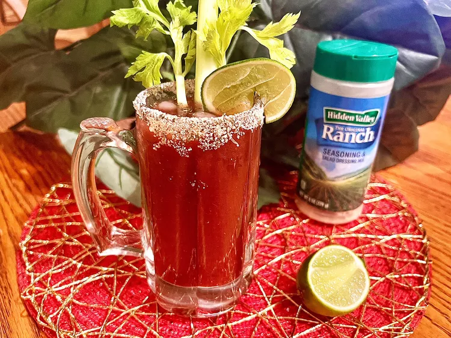

Bloody Mary Recipe
Home

Description
The Bloody Mary is a classic cocktail known for its bold flavors and versatility. Made with vodka, tomato juice, and a blend of spices and flavorings, it's often garnished with celery, olives, or pickles. Perfect for brunch or as a hangover cure, the Bloody Mary can be customized to suit your taste.
Ingredients
- 1 1/2 ounces vodka
- 3 ounces tomato juice
- 1/2 ounce lemon juice
- 2 dashes Worcestershire sauce
- 2 dashes hot sauce (like Tabasco)
- Pinch of salt and pepper
- Ice cubes
- Celery stalk, lemon wedge, olives for garnish
Steps
- Fill a shaker with ice cubes.
- Add vodka, tomato juice, lemon juice, Worcestershire sauce, hot sauce, salt, and pepper.
- Shake gently to combine.
- Strain into a glass filled with ice.
- Garnish with a celery stalk, lemon wedge, and olives.
- Serve immediately and enjoy!